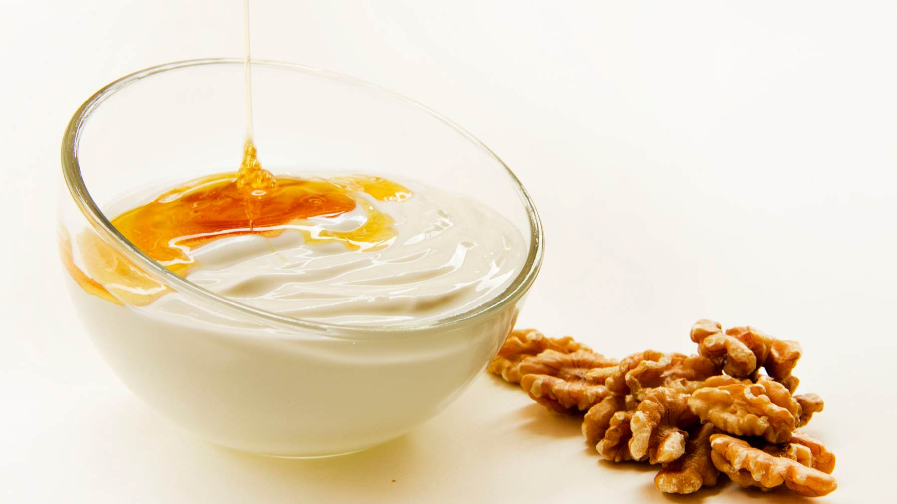
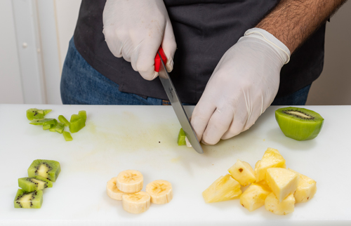
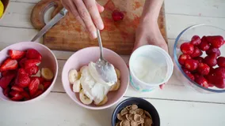

Volver a la página principal
Ingredientes
- 500g de yogur natural
- 2 cucharadas de miel
- Frutas frescas al gusto (por ejemplo, fresas, plátanos, arándanos)
Paso a paso
- En un tazón, mezcla el yogur natural con la miel hasta que estén bien combinados.

- Lava y corta las frutas frescas en trozos.

- Sirve el yogur en tazones individuales y decora con las frutas cortadas.

Resultado final
 Volver arriba
Volver arriba